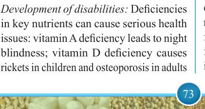

73


Food and Human Nutrition

Form Two
Poor
school
performance:
Food
provides
nutrients
which
enhance
brain development for better cognitive functioning. If a child receives an insufficient supply of the necessary nutrients for brain growth, their cognitive development may be impaired, resulting in poor school performance. Where possible,
schools
should
establish
school feeding programmes, while parents and guardians should ensure that their children are well fed both at home and at school.
Decreased productivity and economic growth: Malnourished individuals are at high risk of contracting infectious diseases. They have low ability to learn; they are less innovative and unable to work. For example, malnourished farmers cannot perform their daily work effectively.
Increased risk of NCDs: Overweight and
obesity can increase the risk of NCDs such
as diabetes and hypertension.
Increased risk of illnesses and death:
Malnutrition weakens immunity. Hence,
it increases the risk of infections which may lead to diseases or death.
Increased cost of treatment: A malnourished
individual becomes vulnerable to diseases.
This situation may increase the cost of treatment due to medication, transport and special diets.
Development of disabilities: Deficiencies
in key nutrients can cause serious health
issues: vitamin A deficiency leads to night
blindness; vitamin D deficiency causes
rickets in children and osteoporosis in adults
while vitamin B9 (folate) deficiency can result in neural tube defects.
Ways of preventing and managing malnutrition
Various strategies can be implemented to prevent and manage malnutrition to
ensure optimal health for all individuals.
Ways of preventing malnutrition
To prevent malnutrition, individuals and communities must be empowered to be agents of change. Malnutrition can be prevented in different ways. These include the following:
(i) Nutrition education
Nutrition education helps to raise awareness among individuals about the causes and effects of malnutrition. It
informs individuals about the importance
of a balanced diet, the role of different nutrients, and the risks associated with malnutrition. Having this knowledge, individuals can be able to make healthy food choices and understand the need for diversified and nutritious diets.
Likewise, they will be able to plan and prepare meals using locally-available nutritious foods. Nutrition education also helps mothers to ensure adequate nutrition is attained for themselves and their children. Mothers who receive nutrition education are able to provide adequate childcare practices including exclusive breastfeeding for the first six months of life, timely complementary feeding and continued breastfeeding for at least two years which contributes in preventing malnutrition. Besides

17/09/2025 16:30